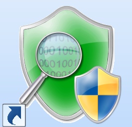
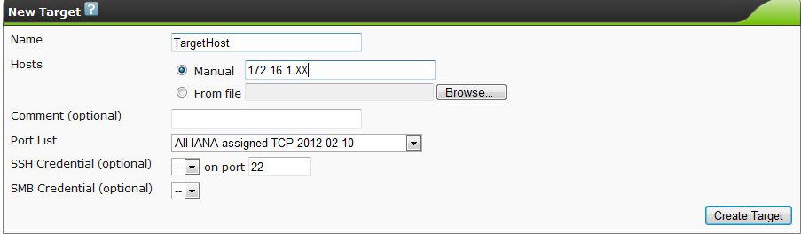
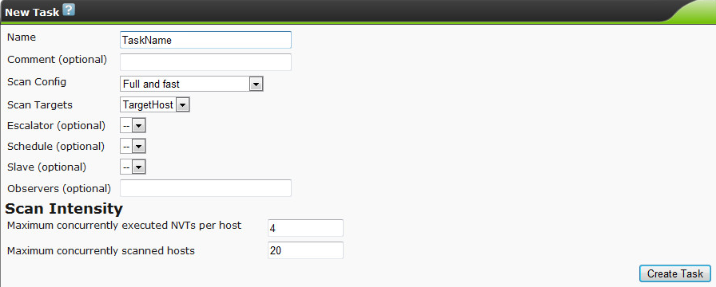

Intro duction
Welcome to the First part of the assignment on how to assess the security posture of a system
Tools
OpenVAS

This tool is a so-called “vulnerability scanner” which looks for possible security holes in a computer system or in a network of computers. Vulnerability scanners are used in a preventive way in order to test how secure the system is. It can thus be used by both security administrators and “hackers”.
OpenVAS consists of a server and a client program. The server can be accessed either through a web interface or a desktop or command-line interface. In the context of the lab, there is one dedicated server acting as the OpenVAS server and its IP address is: 172.16.1.128.
The OpenVAS server has its own user database, where each user’s profile may have different settings and restrictions. This may allow different users to share a single server for a whole network and different administrators testing their assigned part of the network.
Microsoft Attack Surface Analyzer

Attack Surface Analyzer is a tool offered by Microsoft targeting its series of Windows Operating Systems. The tool can take a snapshot of the current system state that can be used as a baseline and later compared against future changes of the system that may be caused by e.g. additional software installations.
IT Security professionals but users as well can utilize this application in order to assess the changes in the Attack Surface of their system that a new installation causes.
Tasks
Perform the following tasks.
- Open your browser and point it to the following URL: http://172.16.1.128:9392. Login with ‘grpX’ as the username where ‘X’ stands for your group number and your group password.
- On the top menu bar of the web interface, you can navigate through various possible actions. Click on the ‘Configuration->Targets’ menu option and then on the star button in order to create a new target. Specify a descriptive name for your target and also the IP address of the target host which is the IP addresses of your assigned VMs. You can either generate your own port list or just use the default. Finally, click on the ‘Create Target’ button.

- Navigate to the ‘Scan Management->New Task’ menu option. Specify a name for the task, select your preferred scan configuration and specify the target. Click on the ‘Create Task’ button.

- In the ‘Tasks’ screen that appears, locate the row that your newly created task has been assigned and click on the ‘Start’ button.
- Wait until the task finishes. You can check its progress using the Refresh button.
- After the task has completed, click on the links generated for the completed Task. Examine the aggregated results per vulnerability level and click on the Details icon to further examine the results by downloading the generated report.

- Look through the report – see what results you obtained. Now, return to the web interface and try creating some new tasks with different scan configurations and experiment with different settings. You can also try running scans on more than one target.
Questions
Different OSs contain different security flaws. Is there a difference between Linux and Windows target hosts? Similarities? Any vulnerable services discovered? Is your system suitably hardened?
Tasks
Perform the following tasks.
- Open the Microsoft Attack Surface Analyzer. Select to ‘Run a New Scan’. After some minutes the operation completes and generates a ‘.cab’ file. This file is going to be used as our baseline system state. Close the application.
- Download and install an application of your choice (for practical reasons select small-sized applications e.g. Foxit PDF Reader). You can even execute the application. Open again the Microsoft Attack Surface Analyzer and run a new scan.
- Use the 2 .cab files that each scan respectively generated in order to generate an attack surface report. Examine the generated report file. Can you identify any additional files, folders, processes etc that the new application introduced to the system? Provide a short description below